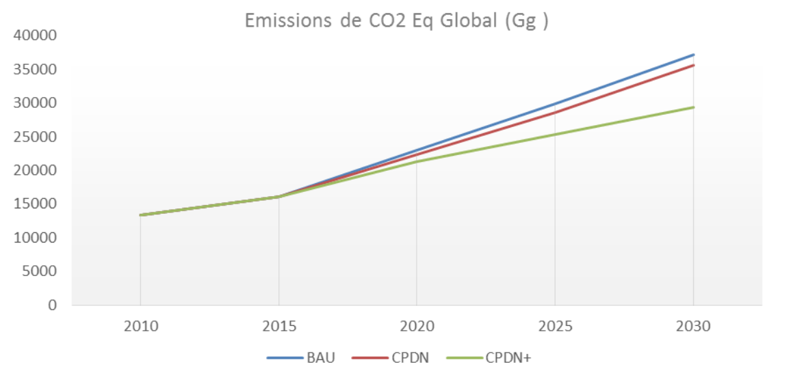

REPUBLIC OF SENEGAL
A People - A Goal - A Faith
MINISTRY OF ENVIRONMENT AND DEVELOPMENT DURABLE
DETERMINED CONTRIBUTION NATIONAL LEVEL (CPDN)
September 2015
Summary
The Emerging Senegal Plan (PSE), as well as its sectoral programs for the sustainable management of its natural and environmental resources. The State of Senegal is implementing several projects and programs aimed at accelerating economic growth, reducing poverty and improving the quality of life of citizens. This strategy relies heavily on the exploitation of its natural resources and requires, in order to ensure sustainable and responsible growth, good management of these resources.
Several studies carried out in Senegal provide information on the consequences of climate change. The observed impacts show a downward trend in rainfall, a definite increase in average temperatures, a rise in sea level and disturbances on the availability of hydraulic and fishing resources, soils and cultivable areas. They reflect the vulnerability of Senegal's ecosystems, requiring specific actions to mitigate and adapt to future climate prospects in order to control their potential impacts, in particular in socio-economic terms, on the 60% of the population whose livelihood depends directly from these resources.
The Senegalese National Contribution Planned Contribution (CPDN) is part of its strategy The CPDN of Senegal has been developed by a team of local consultants under the supervision of the Directorate of Environment and Designated Establishments (DEEC) And the Ministry of Environment and Sustainable Development in collaboration with the National Committee on Climate Change (COMNACC), on the basis of a participatory and inclusive process. A rigorous assessment of the environmental situation, the participation of sectoral experts, local authorities, civil society and the involvement of the State have made it possible to produce a series of significant actions demonstrating Senegal's commitment to contribute The collective challenge of climate change. This assessment made it possible to identify, on the mitigation and adaptation aspects, the priority sectors for activities to control the impacts of climate change such as: agriculture, fisheries, forestry, transport, Waste management, energy and industry.
A national workshop held on September 14, 2015, chaired by the Minister of the Environment and Sustainable Development, validated specific commitments to reduce greenhouse gas (GHG) emissions for Senegal by 2035. The CPDN was adopted by the Council of Ministers on 16 September 2015.
Despite Senegal's limited capacity and low level of current emissions, this contribution reflects the will of the State to take part in global strategies for mitigation and adaptation to climate change. The implementation of the CPDN is estimated at a financial cost of US $ 21.5 billion and requires significant human and technological resources, as well as the support of the international community to allow even more significant reductions, GHG emissions.
Simulations evaluated the expected socio-economic impacts and impacts of these measures. These measures, while intervening directly in the sectors mentioned above, are a lever for improving the national economic situation of public health, managing the problems linked to urbanization, among other issues that are considered essential.
| ADMINISTRATIVE DATA |
SOCIO-DEMOGRAPHIC DATA |
Official Name : République du Sénégal
Area : 196 722 km2
Capital : Dakar
Main cities : Kaolack, Saint-Louis, Thiès Touba, Ziguinchor
Official Languages : Français
Current Languages : Wolof, Diola, Puular, Sérère et Soninké |
Population : 13 508 715 habitants
People under 25: 62%
People over 60: 5,2%
Population growth rate: 2,5%
Density: 69 inhabitants per km2
Urbanization rate: 44%
Poverty prevalence rate: 46,7% (2011)
HDI : HDI: 163rd out of 187 countries (UNDP, 2013) |
| ENVIRONMENTAL DATA |
ECONOMIC DATA |
Oceanside length: 700 Km
Type of climate: Sahelian
Hydrographic network: River Senegal (1,770 km), River Gambia (1,150 km), Lake Guiers (600 million M)
Emission Greenhouse gases: 7,525 Gg ECO2 (2000), 13,076 Gg ECO2 (2005) |
Currency: CFA Franc
GNP: 27.72 billion USD (2013)
GDP growth rate in 2015: 4.6%
GDP per capita: US $ 2,100 |
| AGRICULTURE |
LIVESTOCK |
- Contribution to GDP in 2012: 7.2%
- Source of income of 60% of the population of Senegal
- Vision: achieving self-sufficiency in rice by 2017
|
- Contribution to GDP 2012 : 4,2%
- Size of livestock : 15 millions heads
|
| FISHING |
FORESTRY |
- Contribution to GDP in 2012 : 2,2%
- Share of artisanal fisheries : 95%
- Number of jobs created : 600 000
|
- Contributes to meeting domestic fuel, food, health, housing needs
- Annual deforestation : 40 000 ha par an
|
Introduction
The State of Senegal has defined a framework for its economic and social policy through the Emerging Senegal Plan (PSE). This plan defines an ambitious vision of economic well-being by 2035, which is broken down into a ten-year strategy and a first five-year priority action plan (PAP 2014-2018) and detailed on three axes: (1) transformation Structural structure of the economy and growth; (2) human capital, social protection and sustainable development; (3) governance, institutions, peace and security.
The PES lays the groundwork for accelerating economic growth based largely on intensification of activity in the primary and secondary sectors. On the one hand, the combination of the deleterious consequences of climate change on arable land, hydraulic and fisheries resources and the high population growth of the country are likely to jeopardize the success of this national plan.
Given the country's strong dependence on climate change and in accordance with its tradition of international cooperation, the Government of Senegal intends to contribute to the collective effort through the implementation of measures to mitigate its GHG emissions and Measures in its sectors of activity.
The CPDN of Senegal is thus part of the PES, echoing its Priority Action Plans.
1. Context
The measures proposed by Senegal are based on an in-depth diagnosis of the environmental situation with a view to studying:
- Changes in climate trends from 1961 to 2010 and the climate outlook; and
- The impact of the changes noted on different sectors of economic activity while underlining the vulnerabilities of certain natural and economic systems in relation to these trends.
1.1. Trends in climate trends and outlook
There is consensus on trends in structuring climate indicators in Senegal's ecosystems: changes in temperature, rainfall and sea surface characteristics are expected to continue.
- Temperatures: In general, there is a marked increase in the minimum temperatures, while the maximum temperatures have increased slightly. Forecasts indicate an average change of +1.1 to 1.8 degrees Celsius by 2035.
- Rainfall: the analysis of average trends shows a decrease in precipitation from 1951 to 2000 on reference areas. Future trends predict the continuation of this trend by 2035 and extreme episodes varying between -30% and + 30%.
- Sea surface: an increase in water temperature of approximately 0.04 ° C to 0.05 ° C per year from 1980 to 2009 and a gradual increase in the salinity of the marine waters of the Senegalese coast. Between 1943 and 1965, data from the Dakar tide gauge. Average sea-level rise of 1.4 mm per year. According to the latest evaluations, the current level should continue to increase
1.2. Impacts of Climate Change and Systems Vulnerability
Diagnosing the effects of climate change highlights impacts on biophysical and socio-economic systems.
1.2.1. Impacts and vulnerabilities of biophysical systems
The observed and predicted impacts of climate change affect key biophysical systems in Senegal:
- Hydraulic reserves. The decline in precipitation and the increase in evapotranspiration led to a decrease of more than 50% in the flow of the Senegal and Gambia rivers, a rise in marine waters on the Casamance, Sine and Saloum, a drying up of Ferlo and Associated declines, a general decline in groundwater levels, drying of mainland rivers and other floodplains, and salinization of freshwater and cropland in the diversion bays.
- Biodiversity and ecosystems. According to the Intergovernmental Panel on the Development of Climate change (IPCC), climate change will cause physiological disturbances in some species, but also changes in the functioning of ecosystems. Some ecosystems within the national territory are particularly vulnerable, including mangrove forests, the Niayes area and some coastal wetlands.
- Soils and agricultural land. Due to the decline in rainfall and the expected increase in temperature, there is a reduction in vegetation cover, water and wind erosion, degradation of bare soils and salinization of land. This situation is more pronounced in regions such as Fatick, Kaolack, Ziguinchor and in the Niayes zone where rainfall deficits will be most pronounced.
- Oceans and seas. There is a warming of the ocean temperature, changes in hydrodynamics and trophic enrichment mechanisms (upwelling and inputs from estuaries and rivers) and rapid coastal erosion, a direct consequence of the rise in the level of the sea.
1.2.2. Impacts and vulnerabilities of socio-economic systems
Climate change also affects key Senegalese economic sectors, particularly in terms of employment. Of these, four are noted:
- Tourism. La Petite Côte, the Casamance coastline and the coastal islands, the main tourist areas of Senegal, are very vulnerable to coastal erosion. Seaside tourism represents more than 50% of the national tourism offer. This sector is particularly dependent on the quality of the coastline. The seaside areas of Saly and Djifère as well as the cultural area of Saint-Louis are most affected by the phenomenon of erosion. For the specific area of Saly, which has a With an annual capacity of more than 8 000 beds, 30% of the infrastructures lost their beaches, which were the main tourist attraction of the area.
- Agriculture. The contribution of the sector to GDP increased from an average of 10% between 1997 2001, to just over 7% between 2007 and 2011. The combined effect of decreasing rainfall and rising temperatures negatively affects agricultural yields and productivity in the livestock sector. The expected reduction in the area of agricultural land will Resulting in a 30% reduction in cereal production by 2025. Also expected in the livestock sector. These combined effects promote conflicts between Breeders and farmers for access to resources.
- Fishing. Marine disturbances impact fisheries resources and the resilience of fishing communities. There is migration and decline in stocks of some species that play a predominant role in food, local economies and exports. For example, a COMFISH / USAID study reports the decline in the stock of sardinella in Senegal. This weakens fishing communities and undermines food security.
- Habitat and health. From 1980 to 2009, floods affected more than 900,000 people, caused 45 deaths and resulted in property damage estimated at over US $ 142 million (CFAF 71 billion). Recurrent flooding is a major burden on the national budget and is fueling the emergence of many water - related diseases.
These findings justify the need to develop a contribution from Senegal on mitigation and adaptation to climate change. It focuses on the protection of physical and biological ecosystems in the key sectors of agriculture, forestry, livestock, fisheries, industry and energy, health and climate change management Recurring.
1.3. Equity and Ambitions
Senegal is a least developed country (LDC) and still faces many socio-economic. The activities proposed within the framework of the CPDN are implemented both on the basis of national resources and with the support of the international community. These activities are equitable in relation to national capacities and the vulnerability of the country.
The CPDN is ambitious in that it goes beyond the proposed strategies and programs for LDCs and SIDS.
2. Mitigation measures
The Senegal CPDN, on the mitigation component, aims to implement specific activities that have an impact on reducing GHG emissions, both on the basis of national resources (objectives of the unconditional contribution) and with the support Of the international community (conditional contribution objectives) in relation to its capabilities. These activities cover three gases: carbon dioxide (CO2), methane (CH4) and nitrous oxides (N2O).
2.1. Sectorial Activities
Activities that generate GHG emission reductions will be carried out in the following sub-sectors: (1) energy, through the production of electricity, energy efficiency and transport, (2) Agriculture Forestry and Other Land Use (AFAT) through manure management, rice cultivation, (3) industry, and (4) waste management through the treatment of solid wastes, industrial, domestic and commercial wastewater.
| Energy sector |
 |
| Year of Reference: 2010 |
| Methodology : IPCC 2006 |
| Gas concerned : CO2 |
| Target sub-sector electricity and domestic fuel |
Unconditional options |
Conditional options |
| Strenthening the distribution of electricity and household fuel |
EnR renewable energy program
- Solar PV : Power With a total cumulative power of 160 MWc
- Wind turbine: power stations with total cumultative capacity 150 MW
- Hydraulics: power stations with a cumulative total capacity of 144 MW / 522 GWh
- Rural Electrification (UNEP)
- 392 villages electrified in mini-network Electrified solar or hybrid (diesel / solar)
- Domestic fuels build and distribute
- Installation of 27,500 domestic biodigesters
- Production and distribution of 4.6 million Firewood Improved Fireplaces;
- Production and dissemination of 3.8 Million improved households charcoal.
|
- EnR2 Program (2020 to 2025) - Wind turbines commissioning of power stations with a cumulative total power of 200 MW
- Solar PV: Commissioning of power stations with a cumulative total power of 200 MWc
- Biomass: Commissioning of power stations with a cumulative total power of 50 MW
- Solar - CSP: Commissioning of Power stations of a total power of 50 MW
- Hydraulics: Injection on the 200 additional GWh in 2025
- Replacement of the coal-fired Jindal 320MW coal-fired power plant by two Combined Gas Cycle Natural Liquefied (CCGN) of 400 MW (2025: 200 MW and 2028: 200 MW)
- 5,000 villages solar powered (Mini-network) for universal access to Electricity)
- Household fuels - build and distribute
- 7.6 million improved fireplaces of fire
- 6.8 million improved households charcoal
- 49,000 domestic biodigesters
|
| Sub sector- Energy efficiency |
Unconditionnal options |
Conditionnal Options |
| Improved efficiency Energy |
- Production of typha-based thermal insulation materials in Senegal and adoption of the Nubian vault technique
- In rural housing and community infrastructure
- Pilot phase of promotion of refrigeration equipment
- Mandatory audits for large companies
- Energy supply studies for news Facilities (75 studies / year)
- Environmental upgrading pilot program
- Waste recovery in agro-industry (biogas)
|
- Efficient lighting (Diffuse 3 million LED lamps)
- Energy Efficiency Program In commercial buildings and administration
- Promotion of efficient refrigeration equipment: Replacement of 95% of the of equipment
- Energy efficiency of street lighting (replacement of 75,000 lamp posts)
- Environmental upgrading of enterprises (50 companies per year, with financial incentives)
- Waste recovery in agro-industry: 4 million GJ of agricultural biomass through Co / tri-generation systems (115 MW)
- Energy efficiency of cement plants
- Natural gas: substituting 40% of the coal dedicated to the self-production of electricity by natural gas
|
| Transport sub-sector objective |
Unconditional options |
Conditional options |
| Strengthening Public Transit |
- Bus Rapid Transit (BRT) pilot (Red Line: Dakar / Guédiawaye)
|
- Option 1: Other BRT (Green Line)
|
| Level of Emissions Reduction from BAU |
|
| Years | 2020 | 2025 | 2030 |
| 10% | 23% | 31% |
|
| total costs |
1,361,174,866 USD |
1,708,057,959 USD |
| Industry Sector |
 |
| Reference year: 2010 |
|
| Methodology: IPCC 2006 |
|
| Gas concerned: CO2 |
|
| Aims and Objectives |
Conditional options |
| Improvement of industrial processes |
- Substitution of Clinker CO2 in Cement Manufacturing
|
| Level of emission reduction compared to BAU |
- Reduction of 10% in 2025 and 10% in 2030
|
| Costs |
109,000,000 USD |
Note: Elimination of 35% of HCFC-22 consumption by 2020 will have a significant impact on GHG emission reductions in the industry sector.
| Waste Sector |
 |
| Reference year: 2010 |
| Methodology: IPCC 2006 |
| Gases involved: CO2, CH4, N2O |
| Objectives |
Unconditional options |
Conditional options |
| Sanitation and waste recovery |
- Construction of 3 Centers Integrated value-added Waste (DIC) in the Towns of Tivaoune, Touba And Kaolack
- Reinforcement of the purification capacity of the STEP of Camberène, Rufisque and installation of new STEPs in the cities of Ziguinchor, Fatick, Kaolack, Kolda, Matam, Joal, Nioro and Bakel
|
- Rehabilitation of 357 listed wild dumps
- Valorization of organic matter (Composting) and energy (methanisation)
- Construction of sustainable waste management infrastructure
- 100 Regrouping Points Standardized (PRN)
- 17 Integrated Centers for the Waste (DIC)
- Recovery of effluents from spatially or temporally installed biodigesters
|
| Level of emission reduction compared to BAU |
Reduction of 11% in 2020, 14% in 2025 and 13% in 2030 |
Reduction of 26% in 2020, 28% in 2025 and 31% in 2030 |
| Costs |
6,900,000 USD |
1,370,000,000 USD |
| Agriculture Sector |
 |
|
| Year of Reference: 2010 |
|
|
Methodology: IPCC 2006 |
|
|
| Gas concerned: CO2, CH4 and N2O |
|
|
| Aims and Objectives |
Unconditional options |
Conditional Options |
|
Program of Recovery and Acceleration of the Cadence of the Senegalese Agriculture (PRACAS) |
- Intensive Rice-growing System (SRI): Economy of almost 40% in water compared to traditional flooded rice cultivation
|
|
|
- Sustainable Land Management
- Application of good practices Agroforestry, Natural Assisted Regeneration (NAS) and the use of organic manure on half of the area sown by 2035
|
| Implementation of projects and programs |
Program of Recovery and Acceleration of the Cadence of the Senegalese Agriculture (PRACAS)
- PES Projects and Programs (PRACAS)
|
- Agroforestry
- Combination of trees, conventional crops and / or animals in the form of an arrangement
- Recovery of effluents from spatially or temporally installed biodigesters
|
| Level of emission reduction compared to BAU |
- Reduction of 0.08%, 0.14% and 0.19% respectively in 2020, 2025 and 2030
|
- Reduction of 0.35%, 0.51% and 0.63% respectively in 2020, 2025 and 2030
|
| Costs |
396,105,823 USD |
1,796,052,928 USD |
| Forestry Sector |
 |
|
| Base Year: 2010 |
|
|
| Methodology: IPCC 2006 |
|
|
| Gas concerned: CO2 |
|
|
| Objectives |
Unconditionnal Options |
Conditionnal Options |
| Reduction of emissions from fuelwood and coal consumption |
- Participatory forest management and management (over 30 forests with PROGEDE)
- Effort of domiciliation of the exploitation of the wood and the coal in the managed forests
|
- Defending undeveloped forests
- Development of 20 forests per year for 5 years, including 60% classified forests and 40% communal forests during 5 years (Development of 1 million ha of forests)
- Substitution of the traditional wheels by the casamançais wheel
- Diversification of domestic fuels
|
| Reduction of emissions from deforestation and forest degradation |
- Strengthening the monitoring and participatory management of forests by increasing the number of staff of the Forestry Department (number x 2)
- Reforestation, Great Green Wall (GVW), eco-villages, annual reforestation and restoration of mangroves by the State and other actors, etc.
|
- Reduction of the deforestation rate (which is -40 000 ha) by 25% from 2023)
- Development of 20 forests per year for 5 years, including 60% classified forests and 40% communal forests during 5 years (Development of 1 million ha of forests)
- Defense / RNA, reforestation through forest enrichment
- 4000 ha / year of mangroves set aside and reforested from 2017
|
Reduced emissions from bush and pasture fires
BAU: 907.656.2 ha burned on average from 2006 to 2010 |
- Annual reduction of burned areas of the order of 5% from 2020
|
- Reduction of 30% in area burned from 2020 and 90% from 2025
|
Sequestrations due to reforestation of classified forests
BAU: 22 392 ha / year of 2011 To 2035 |
22,392 hectares reforested per year since 2011 |
200 000 to 204 000 ha reforestation annually from 2017 |
| Coûts |
655,000 USD |
76,800,000 USD |
2.2. Impacts on global emissions
Under the unconditional option (CPDN), emission reductions in relation to their expected trajectory are 3%, 4% and 5% respectively in 2020, 2025 and 2030. With the conditional option (CPDN +), reductions Of expected emissions are around 7%, 15% and 21% over the same years.
Table 1: Unconditional and conditional mitigation targets
|
Unconditional |
Conditional |
|
|
| Sectors |
2020 |
2025 |
2030 |
2020 |
2025 |
2030 |
| Energy |
4% |
7% |
6% |
10% |
23% |
31% |
| PIUP |
0% |
0% |
0% |
0% |
10% |
10% |
| Agriculture |
0,08% |
0,14% |
0,19% |
0,35% |
0,51% |
0,63% |
| Waste |
11% |
14% |
13% |
26% |
28% |
31% |

Figure 1: Overall emissions trajectory
2.3. Implementation of mitigation options
2.3.1. Financial Requirements
Funding requirements for the unconditional contribution amounted to more than US $ 1.8 billion. The funding requirement for the contingent contribution is US $ 5 billion. Funding for the contingent contribution is expected under the financial mechanisms that will accompany the Agreement
2.3.2. Technological needs
For agriculture and forestry, it will be necessary to renew equipment and strengthen technical capacities in cartography and geographic information systems, and use of GPS.
For energy, a need for technical assistance to fill gaps and expertise for development has been identified to support the implementation, operation and sustainable Technologies:
- Combined Natural Gas Generating Stations; - CSP (TES + Desalination + GN);
- Permanent magnet wind turbines and direct drive;
- Natural Gas Logistics and required infrastructure;
- co-tri-generation system
- Monitoring, measurement and monitoring system
These partnerships will assess training needs in order to develop technician, engineer, masters / doctoral level training programs.
2.4. Use of market mechanisms
Regarding the use of market mechanisms, the State of Senegal does not intend to make its contribution by purchasing emission reduction units from any existing market mechanism or to come up. Nevertheless, Senegal will be a host country for projects of any international climate mechanism aimed at ensuring the protection of the planet by respecting standards that offer real, permanent, additional and verified results while avoiding double counting Emissions and meeting its sustainable development objectives
In addition, Senegal supports the continuation of the Clean Development Mechanism (CDM) under the Kyoto Protocol and its continuation in a form to be defined under the new Agreement. Elements of the CPDN that are contingent, with international assistance, could include projects that are registered under non-market mechanisms established under the Convention.
2.5. Socio-economic impacts of planned measures
Climate change exacerbates the deterioration of Senegal's environmental capital. In turn, all the key sectors of the economy suffer directly or indirectly from the phenomenon whose consequences jeopardize the smooth running of the economy. Significant socio-economic benefits are expected from the measures advocated.
2.5.1. Production of electricity, biomass and waste
Measures to reduce CO2 emissions in the fields of electricity generation, biomass and waste are likely to provide the following benefits:
- Significant contribution to the country's energy independence;
- Reduction of supply deficits and vulnerability to price fluctuations International hydrocarbon markets;
- Improvement of the balance of payments, or even a reduction in the State budget devoted to energy subsidies;
- Employment creation estimated at about 40,000 net jobs, directly and indirectly;
- Contribution to local development: the development of biogas and bio-charcoal in rural areas creates micro- and small enterprises and jobs;
- Reduction of local air pollution and consequent reduction of adverse effects On population health;
- Use of modern forms of energy in households, thereby alleviating the workload of women and contributing to the improvement of children's educational performance.
2.5.2. Energy efficiency, transport and industry
In the fields of energy efficiency in buildings, transport and industry, To reduce CO2 emissions would bring the following benefits:
- Significant reduction in energy bills weighing heavily on businesses and households;
- Adoption of regulations requiring companies to carry out energy audits and energy supply studies and improve their energy performance from 5% to 15% and their margin of productivity and competitiveness.
3. Measures of adaptation
All the sectors targeted for the revival of the Senegalese national economy, such as agriculture, livestock, fisheries, tourism, health and nutrition, access to water, The PES background, remain vulnerable to the impacts of climate change.
Structural options such as coastal protection structures, retention ponds, hill dams, land degradation technologies, drinking water systems have been implemented to mitigate their vulnerability and reduce negative impacts on populations. However, in view of future climate projections and the state of the art of biophysical, environmental and socio-economic systems, it is necessary to scale up these appropriate practices.
To this end, the climate change adaptation component, beyond the development of the CPDN, is a national concern. Senegal's ambition is to integrate adaptation to change climate change in the formulation and programming of development policies along the lines of other priorities such as poverty alleviation, health and national programs to combat HIV / AIDS, malaria, tuberculosis, etc. Ensure a controlled trajectory of the objectives of growth.
3.1. Objectives of adaptation
The options listed in the table below represent Senegal's sectoral objectives for adaptation in 2016-2035.
Tableau 2 : Options adaptation aux horizons 2016-2035
| Biodiversity |
- Implementation of instruments such as: the National Strategy and Plan Action on Biodiversity (SPNAB), the National Policy for the Management of Wetlands (PNZH), the framework bill on biodiversity and protected areas;
- Strengthening the resilience of ecosystems;
|
| Coastal Areas |
- Establishment and support of a coastal observatory;
- Protection of vulnerable areas and / or displacement of vulnerable populations;
- Scientific and technical studies on the restoration of coastal ecosystems threat ;
|
| Water resources |
- Maitrise the resource;
- Integrated Water Resources Management;
|
| Fish |
- Promotion of fisheries insurance;
- Risk and disaster prevention and management;
- Improved management effectiveness and expansion of marine protected areas and parks;
- Sustainable aquaculture development and sustainable resource management fisheries;
|
| Agriculture |
- Promotion of Sustainable Land Management (SLM) technologies;
- Improvement and adaptation of plant and forest products;
- Promotion of agricultural insurance;
- Promotion of climate information;
- Scaling up of concerted management of natural resources;
|
| Breeding |
- Development of pastoral units;
- Promotion of pastoral insurance
- Genetic improvement of species;
- Improvement and adaptation of production and animal health;
|
| Flood |
- Strengthening sanitation infrastructure and stormwater drainage systems in cities;
- Planning of urban ecosystems integrating watersheds;
|
| Health |
- Strengthening and implementation of the epidemiological surveillance system.
|
3.2. Costs of options to 2035
The total cost of options for climate change adaptation by 2035 is US $ 14,558 million and consists of the following:
Table 3: Cost of adaptation action plan in millions of US dollars
| Sectors |
National commitment Period 2016-2035 (1) |
External financing Period 2016-2035(2) |
Total (1) +(2) |
| Biodiversity |
22.34 |
193.66 |
216 |
| Coastal areas |
400 |
6646 |
7046 |
| Water resources |
550 |
1654 |
2204 |
| Fishing |
40 |
280 |
320 |
| Agriculture |
400 |
1200 |
1600 |
| Breeding |
200 |
616 |
816 |
| Inondation |
160 |
1 976 |
2136 |
| Health |
60 |
160 |
220 |
| Total |
1,832.34 |
12,725.66 |
14,558 |
3.3. Obstacles
The dynamic nature of vulnerability, which is often influenced by several factors (environmental, socio-economic, political and institutional), makes any action to adapt to climate change complex. The following points constitute major stakes that Senegal will have to master:
- Adaptation planning at the national level. Initiatives undertaken and implemented provide responses to emergencies and require planning at a macro level. The ongoing development of the National Adaptation Plan (NAP) will make it possible to integrate a long-term planning approach into Senegal's future initiatives.
- Good control of the regulatory framework and means of implementing commitments. The implementation of simplified legislative procedures and sectoral codes (fisheries code, environment code, forest code, energy code) adapted to the national context will promote greater involvement of public and private decision-makers and facilitate the implementation of commitments. The effective implementation of commitments will also require the strengthening of the technical (quantitative and qualitative), technological (equipment and labor) and human resources available to Senegal.
- The establishment of a multisectoral approach. Climate change impacts across key sectors of the national economy. Effective resilience in this area requires the adoption of a multisectoral approach to strengthen consultation between actors in the field and facilitate the development of a harmonized framework for future interventions.
- The development of an effective communication strategy. It is essential that political actors are made aware of the effects of climate change on the same basis as the communities most affected by floods, coastal erosion and the reduction of arable land. The adoption of a communication strategy oriented citizen and decision-maker then becomes a necessity in order to better involve all the stakeholders in the process initiated by Senegal.
3.4. Key factors of success
Senegal benefits from factors favorable to the attainment of the objectives set in the context of mitigation and adaptation to climate change. These factors are identified at the institutional, regulatory, strategic and national levels.
- At the institutional level:
- Senegal signed in June 1992 and ratified the United Nations Framework Convention on Climate Change (UNFCCC) in June 1994;
- It has a National Committee on Climate Change (COMNACC) which provides an operational framework for information, awareness-raising, training and support to various projects and programs on climate change issues.
- At the regulatory level:
- The adaptation of biodiversity to climate change has been integrated into the various sectoral codes (forest codes, the environment, hunting and nature conservation, fisheries, mining, Water, urban planning and construction);
- The littoral law also provides for regulations on adaptation to climate change.
- At the strategic and national levels, several initiatives have also been implemented, including the National Strategy and Plan of Action on Biodiversity (SPNAB), National Wetland Management Policy (PNZH), New Forest Policy (2005-2025).
3.5. Socio-economic impacts of planned measures
Significant benefits are expected from the adaptation options to be implemented by Senegal by 2035. These impacts affect several aspects but the most significant benefits are expected from the socio-economic point of view in the following sectors:
Soil and Agriculture
- Reducing the incidence of poverty;
- Contribution to better food and nutrition security;
- Strengthening resilience;
- Job creation;
- Increase in average agricultural yields to 3.2 tonnes in 2035 for the BAU vs. trend scenario. 4.2 tons in 2035 for the scenario of the pro-active soil policy.
Fishing
- Creation of added value US $ 9,200 million in the sector by 2035;
- Better economic and social contribution of the sector through sustainable fisheries management (Crisis and climate control).
Coastal Areas
- Reduction of socio-economic risks that negatively impact the economic performance of the tourism sector in the most degraded areas;
- Fight against declining fishing yields and direct costs on coastal infrastructure.
Water resources:
- Limiting the rural exodus and its adverse effects;
- Achieving productive water that generates added value in agricultural regions thanks to the structures put in place;
- Creation of employment opportunities in the areas affected by the works;
- Recharge of groundwater;
- Contribution to the fight against the problems of salinization;
- Participation in flood control;
- $ 9.08 million in profits from adaptation to the risk of flooding in St. Louis;
- Reduced net discounted cost (CAN) related to coastal erosion estimated by the World Bank to be US $ 688 million.
Health
- Reduced costs of deteriorating health status of populations estimated at 2,400 million US dollars by 2080
Inundation
- The expected socio-economic benefits of flood prevention are avoided losses and damage;
- Reduction of the risk linked to the proliferation of waterborne diseases (diarrhea, dysentery), malaria and skin diseases;
- Reduction of the risk of school leakage due to school occupancy by disaster victims or the impossibility of going to the classrooms during the rainy season.
4. Monitoring and evaluation
Under the supervision of the Department of Environment and Designated Establishments of the Ministry of Environment and Sustainable Development, monitoring and evaluation of projects / programs will be carried out through:
- COMNACC, which will be the platform responsible for monitoring the implementation of the activities foreseen in this contribution. It will monitor the various indicators of the CPDN in relation to the sectoral departments;
- Establishment of a mechanism to monitor the implementation of the National Adaptation Plan (NAP) under development, which will manage all the projects and programs identified as options for mitigation and adaptation;
- Establishment of a Coastal Observatory for coastal zones;
- Adoption of an early warning system for the prevention of risks and disasters;
- The use of the Center for Air Quality Management in Dakar (CGQA) for the monitoring of climatic and atmospheric parameters defined in the CPDN;
- Regional climate change committees (COMRECC) including local authorities through decentralized structures, decentralized structures of sectoral departments, representatives of the private sector, NGOs and CBOs.
Specifically for the mitigation component, the contribution of Senegal will be monitored, reported and verified through the elements contained in the national communications, the updated biennial reports and the provisions on Nationally Appropriate Mitigation Measures (NAMAs) Development.
5. Conclusion
The contribution made by Senegal reflects the government's strong desire to GHG emissions in sectors such as energy and industry, which today contribute the most to national CO2 emissions. It also sets out a number of specific adaptation measures in view of the impact of climate change on key sectors of the Senegalese economy.
This unprecedented effort is a prerequisite for the success of the Emerging Senegal Plan (PSE), hence the strong involvement of Senegalese political decision-makers in defining and monitoring this contribution.
Success will also depend on all countries engaged in the fight against climate change to work in a concerted and pooling approach.